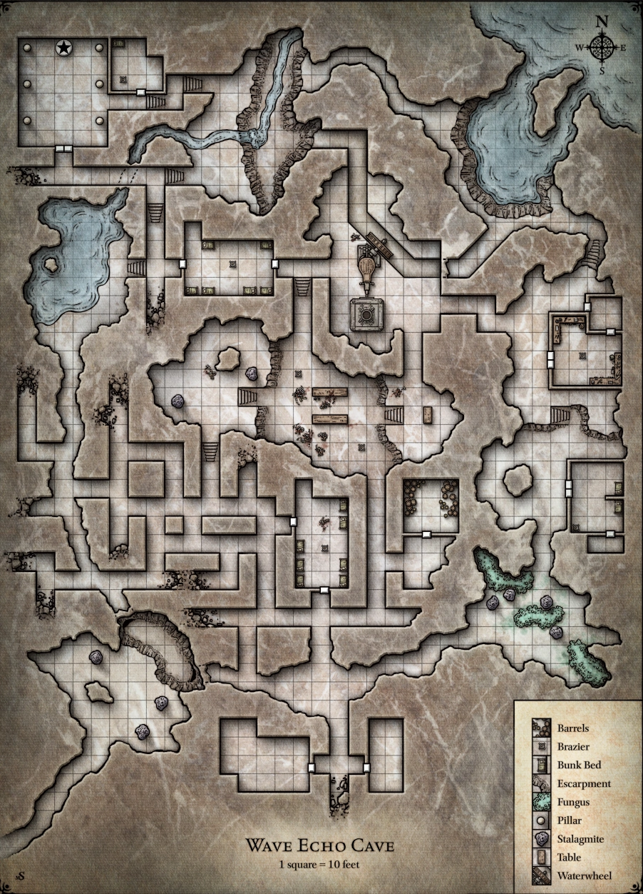

Wave Echo Cave
Wave Echo Cave is a place of legend that was lost for an unknown amount of time. It is named for the large body of water that meets a cliff face in its northeast section, whose crashing waves resound throughout the cavern.
At one point, it housed the Archivists of the Phandelver Pact, who performed research on magical items. Gundren Rockseeker and Sildar Hallwinter set up a mining operation here which attracted the attention of others, including The Black Spider. Wave Echo Cave is the site of a temple to Dumathoin, a dwarven mining god, as well as the Spellforge.
Map¶

Points of Interest¶
- Temple of Dumathoin
- Spellforge Workshop
- Underground Sea
Inhabitants¶
- Archivists (ancient, deceased)
- Spectator (deceased)
- Flameskull (deceased)
 to capture or kill
to capture or kill